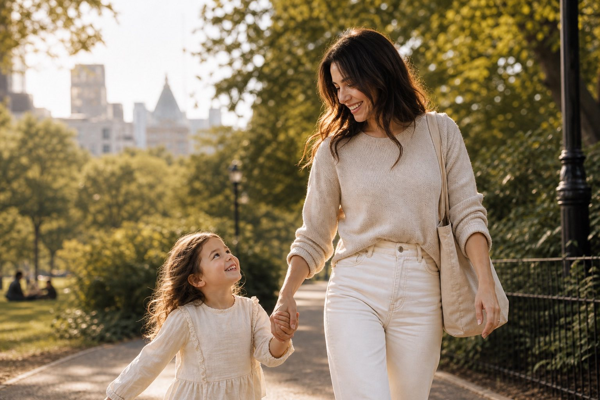

MNY Photo — NYC + travel
Cinematic photography for people, brands, and unforgettable moments.
Warm, editorial images with calm direction and a print-first finish. We build galleries that feel like a story — not a photoshoot.
- Editorial direction
- Natural skin tones
- Print-ready delivery
- 48-hour sneak peek option
Photography that feels editorial — and still completely you.
MNY Photo blends documentary observation with refined portrait direction. We plan around light, movement, and story — then keep the session day simple so you can be present.
Portfolio preview
Eight story-driven sets — each designed around a different kind of moment.



Services
A small menu, delivered with big intention.

Portrait Sessions
Modern headshots and editorial portraits with calm direction.

Weddings & Engagements
Documentary coverage with refined portraits that feel effortless.

Events & Celebrations
Candid energy, flattering light, and detail coverage for fast days.

Brand Photography
Campaign sets and evergreen visuals designed for performance.

Product & Detail
Warm, crisp still life images built for ecommerce and lookbooks.

Lifestyle & Family
Natural moments photographed with editorial composition.
The process
A clear path from inquiry to gallery delivery — built to keep you relaxed.
-
Inquiry
Share your date/timeframe, goals, and the kind of images you need. We respond with next steps and availability.
-
Creative direction
We align on mood, locations, and styling. You get a simple plan: what to bring, what to expect, and how we’ll shoot.
-
Session day
You’ll be guided with easy prompts and clear direction. We keep the energy steady and the pacing comfortable.
-
Editing
Warm, polished color, true skin tones, and consistency across the full story. Every gallery is curated with intention.
-
Gallery delivery
You receive a shareable gallery with print-ready downloads, favorites tools, and guidance for albums and wall art.
Signature style pillars
A consistent look that stays timeless — with room for your personality.
- Cinematic light
- Natural direction
- Editorial composition
- Warm, polished editing


A small studio built for calm, confident sessions.
We keep sets light and direction clear — so your images feel natural, elevated, and deeply personal.
- Pre-session planning with mood + shot flow
- Location + wardrobe guidance that actually helps
- Editing that respects skin and light
6+
session styles
48h
sneak peek option
100%
custom planning
ready delivery
Testimonials
Realistic words from fictional clients — the kind we’re proud to earn.
“The direction was so clear that we forgot we were being photographed. The gallery feels like a short film.”
“Our brand images finally match our product quality. The shots are warm, clean, and ridiculously usable.”
“We got candid moments we didn’t even know happened — and portraits that look like they belong in print.”
Booking + investment
Pricing is shaped by time, complexity, and usage — not a one-size menu.
- Session length + number of locations
- Creative direction + shot count
- Event coverage timing and deliverables
- Commercial usage (web, press, ads)
FAQ
Quick answers to common questions.
Do you help with poses?
Yes — we direct with simple prompts and small adjustments so you look natural. Think guided movement, not stiff posing.
How do we choose a location?
We start with your vibe and how you’ll use the images, then pick places that match the light. You’ll get 2–3 options with timing recommendations.
When do we get our gallery?
Turnaround depends on the project size. You’ll always receive a clear delivery window before we shoot, with an optional 48-hour sneak peek for select sessions.
Do you deliver black & white versions?
Absolutely. We include black & white conversions when they strengthen the story — not as an afterthought.
Resources
Guides for planning a session, choosing looks, and using your gallery well.

Wardrobe guide for warm neutrals
A simple palette, what photographs well, and what to avoid when you want images to feel editorial.
View resources →
Light-first location scouting in the city
How we pick spots that look good in every season and keep the pacing calm.
Browse guides →
Print-ready delivery (what to expect)
Downloads, sharing links, and how we prep images so they look great off-screen.
Learn more →Ready to create images you’ll actually use?
Tell us what you’re planning — we’ll recommend timing, locations, and the right session structure for your goals.